生物统计学与R手札
作者：王诗翔
更新日期： 06-05-2017
目录
如果是初次阅读本文档，请先查看该文档的介绍说明。
Introduction
生物统计学：是统计学在生物学中的应用，是用数理统计的原理和方法来分析解释生命现象的一门科学，是研究生命过程中以样本推断总体的一门科学。
以数理统计原理为基础，应用到生物实验设计和分析领域，这便形成了生物统计学科的框架。所以学习过程是一般在学习概率论与数理统计的同时，对生物领域的实例进行相应分析和解读。
统计分析的流程：
- 设计或形成假设
- 设计相应的实验
- 收集数据
- 分析总结数据
- 形成推断
这与一般的科学研究过程是相同的，实质上生物科学研究的分析过程也就是生物统计分析的实例化。
数据的来源：
统计学上经常涉及到变量这个概念，它是指一种体现在不同对象上有不同数值的特征量，比如人的心率，对象是人，不同的人心率不一样，构成了心率的数值集。
变量有可以分为数值型变量和分类变量，前者通常指能够被测量的数值量，比如身高体重；后者一般指不能被数值化，通过评估生成的变量，比如视力的好坏，病人病情等级等，又可以依据是否有序分为连续型和非连续型变量，比如病人等级从低到高分为几类，这里就包含了变量的顺序(Rank)信息。
总体 population： 感兴趣的随机变量的数据总集。
样本 sample： 总体的抽样。
注意：采样尽量为保持一种随机的过程，这是在设计实验时非常需要注意的，不然结果不可靠。
几种采样方式：
- 随机采样： 通过计算机生成的伪随机数抽取相应的数据；
- 系统采样： 将数据排序，每隔K个抽取一个数据；
- Convenience Sampling： 哪个方便用哪个；
- 分层抽样： 将总体按相同特征分为至少两类，在类别中分别抽样。
- ......
上述抽样方法详细介绍及优缺点可以参考百度百科。
统计量是样本的描述量；参数是总体的描述量。
概率相关的基本概念大都不难，理解即可。需要注意的是贝叶斯公式，它在当今各大领域都非常常用，值得深挖。

常见概率分布统计书上都有详细介绍，用的时候查询即可。
因为我们常用的数据都很难直接满足正态分布，单为什么用正态分布去理解和计算呢，这里有两个定理概念需要理解：
- 大数定理就是样本均值在总体数量趋于无穷时依概率收敛于样本均值的数学期望（可不同分布）或者总体的均值（同分布）。
- 中心极限定理就是一般在同分布的情况下，样本值的和在总体数量趋于无穷时的极限分布近似于正态分布。
参数估计
点估计是以抽样得到的样本指标作为总体指标的估计量，并以样本指标的实际值直接作为总体未知参数的估计值的一种推断方法；区间估计则是根据抽样指标和抽样平均误差推断总体指标的可能范围，它既说明推断的准确程度，同时也表明了推断结果的可靠程度。可见，点估计所推断的总体指标是一个确定的数值，而区间估计所推断的总体指标是一个数值域，这个值域受样本指标、极限误差和样本单位数等因素的影响。
点估计（Point Estimate）
http://wiki.mbalib.com/wiki/点估计
http://baike.baidu.com/view/635268.htm
区间估计（Interval Estimation）/置信区间（Confidence interval）
在置信度为置信度下的
- 区间估计写为：，点估计写为
- E为误差限，
- 由上述公式可以推出所需要的样本大小
- 总体方差已知时，估计均值使用z分布（u分布），,
- 总体方差未知时，估计均值使用t分布，，，
方差估计
- 卡方分布：，
- 方差的区间估计为
参数检验与非参数检验
统计中常常提到p值，它的实质是一个小概率事件发生的概率大小值。例如说某件事情的指的是这件事情发生的概率不超过0.05，因为它发生的概率极小，所以在一般的实验（试验）中，很难碰到这样的事情。因此，当我们碰到这样的事情时，术语说这是一件显著的事情（为极其显著）。实际实验过程中如果数据噪声服从高斯分布（正态分布），这样的事情应当不会发生（概率很小嘛），那么就应该是其他因素导致的。比如说两组数据进行对比时，如果这两组样本是从同一个总体抽出来的，就应该没什么差异（一般用总体均值的假设检验）；如果两组样本经过不同的处理，发现有显著差异（概率很小的事情发生了），说明这两组不同处理的样本映射为不同的总体，我们以此结果来推断两个不同处理的总体它们之间有显著性的差异（所以说实验才是可以重复的，因为每次实验都是对总体的抽样）。
假设检验的步骤
一般包括以下四个步骤：
- 提出假设：一般做两个彼此独立的假设，一个是无效假设或零假设（null hypothesis 很常用），记做；另一个是备择假设，称为。所谓的无效意指处理效应与总体参数之间没有真实的差异，实验结果中的差异是误差导致的。
- 确定显著水平：常用
- 计算概率（p值）：有双尾和单尾两种
- 推断是否接受假设
这方面的知识网上很多，可以参考百度百科或其他资料。
总体的单样本参数检验
总体方差已知时对总体均值检验
如果总体方差已知，使用z分布（标准正态分布）进行计算
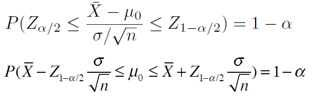
总体方差未知时对总体均值进行检验
如果总体方差未知，使用t分布进行计算
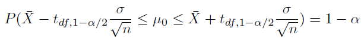
（修正一下，上图总体方差未知，sigma应该用样本标准差s替代）
计算时根据要求，算出z值或者t值，然后与置信度（t分布需要看自由度）下的z（或t）统计量进行对比。观察是在否定区间还是接受区间，从而完成对假设的推断。
当检验是单边时，上述公式的变成
在R中，统计量与分布的计算和图形的绘制可能涉及到的一些函数的使用，可以参考数值与字符处理函数，基本统计分析，基本图形绘制。
以下是常用的概率函数

它的使用概率函数形如：[dpqr] distribution_abbreviation()
前面一部分是选择计算哪种类型（是概率函数还是分布函数..），后面一部分是指定使用的分布。
比如说qt()就是计算t分布的分位数函数，函数具体的参数调用可以使用help()进行查询。
在对单样本的总体方差进行检验时，常用卡方分布，两样本则用F分布。
公式分别为：
注意，卡方分布不仅可以用来检验方差同质性，还可以进行适合性和独立性检验，后两者用来判断实际观测值与理论观测值的偏离程度。
当对总体频率进行检验时，如果不满足中心极限定理，则不可以用正态分布进行检验，转而使用二项分布进行检验。
小结：
One sample parametric test usually assumes that samples are randomly selected from normal distribution.
- ✤ (1) The mean of a normal distribution with unknown variance (one-sample t test)
- ✤ (2) The mean of a normal distribution with known variance (one-sample z test)
- ✤ (3) The variance of a normal distribution (one-sample 2 test)
- ✤ (4) The parameter p of a binomial distribution (one-sample binomial test)
类型1与类型2错误
两种类型错误及其关系
第一类错误(typeⅠerror)，Ⅰ型错误，拒绝了实际上成立的H0，，即错误地判为有差别，这种弃真的错误称为Ⅰ型错误。其概率大小用即检验水准用α表示。α可取单尾也可取双尾。假设检验时可根据研究目的来确定其大小，一般取0.05，当拒绝H0时则理论上理论100次检验中平均有5次发生这样的错误.。 第二类错误(typeⅡ error)。Ⅱ型错误，接受了实际上不成立的H0 ，也就是错误地判为无差别，这类取伪的错误称为第二类错误。第二类错误的概率用β表示，β的大小很难确切估计。 二者的关系是，当样本例数固定时，α愈小，β愈大；反之，α愈大，β愈小。因而可通过选定α控制β大小。要同时减小α和β，唯有增加样本例数。统计上将1-β称为检验效能或把握度(power of a test)，即两个总体确有差别存在，而以α为检验水准，假设检验能发现它们有差别的能力。实际工作中应权衡两类错误中哪一个重要以选择检验水准的大小。
由此引申出几个公式概念，包括灵敏度、特异性、假阳性率等，它们的计算方式如下：

这些概念常用来计算ROC曲线，该曲线在评判模型的有效性中非常流行。
简单地讲，ROC曲线描绘了灵敏性（真阳性率）随假阳性率（1-特异性）的变化趋势。
AUC则是指ROC曲线下方围成的面积，数值越大，分类器（模型）效果越好。
详细参考：ROC曲线概念；ROC和AUC介绍以及如何计算AUC
功效（真阳性率），如果功效过低，那么就算处理不同导致有显著性差异也很难检测出来，所以在进行检验时，我们需要对它进行控制。
统计检验的功效计算（分别使用与正态分布、t分布与样本频率检验）

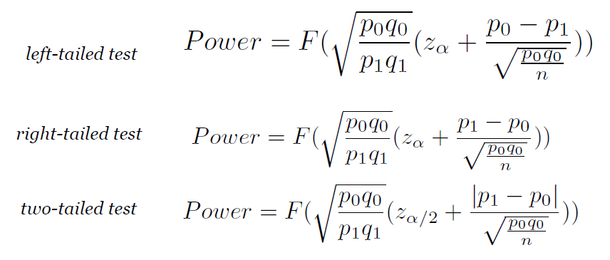
效应值： ，表示两个总体的平均值差异
功效分析可以帮助在给定置信度的情况下，判断检测到给定效应值所需的样本量。反过来，它也可以帮助你在给定置信度水平情况下，计算在某个样本量内能检测到给定效应值的概率。如果概率低得难以接受，修改或放弃这个实验将是一个明智的选择。
在研究过程时，研究者通常关注四个量：样本大小、显著性水平、功效和效应值。
- 样本大小指实验设计中每种条件中观测的数目。
- 显著性水平（也称为alpha）由I型错误的概率来定义。也可以把它看作发现效应不发生的概率。
- 功效通过1减去II型错误的概率来定义。可以把它看作真实效应发生的概率。
- 效应值指的是在备择或研究假设下效应的值。效应值的表达值依赖于假设检验中使用的统计方法。
四个量紧密相关，给定其中任意三个量，便可以推算第四个量。
我们常常会使用到t分布检验相关的功效分析，这里有一篇值得参考的博文找出t检验的效应大小，对耍流氓 say no！。
功效分析使用到的一些函数和包可以参考R语言中的功效分析。

两样本参数检验
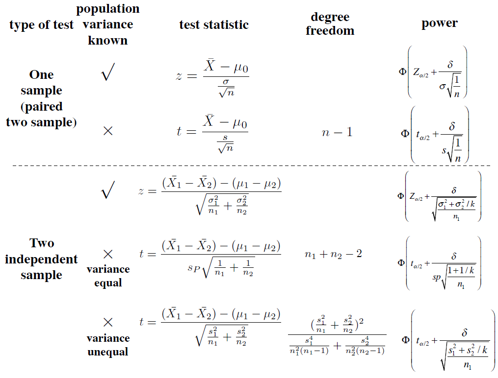
图中
功效分析和相关检验可以参考上一节。
方差分析非参数检验
非参数检验(Nonparametric tests)是统计分析方法的重要组成部分，它与参数检验共同构成统计推断的基本内容。参数检验是在总体分布形式已知的情况下，对总体分布的参数如均值、方差等进行推断的方法。但是，在数据分析过程中，由于种种原因，人们往往无法对总体分布形态作简单假定，此时参数检验的方法就不再适用了。非参数检验正是一类基于这种考虑，在总体方差未知或知道甚少的情况下，利用样本数据对总体分布形态等进行推断的方法。由于非参数检验方法在推断过程中不涉及有关总体分布的参数，因而得名为“非参数”检验。
也就是说，之前的参数检验，我们在对数据分析之前，需要假定该数据的总体服从某种分布，而这些分布的假定是需要前提条件的，其中最重要的是正态性，而往往我们的数据很难达到这样的要求，甚至对于总体的分布完全一无所知。这个时候我们就可以使用非参数检验。（当然两者之间的优缺点对比还有很多）
一般来说，能用参数检验尽量使用参数检验，因为它的统计效力远高于非参数检验，这也是为什么t检验在文献中非常流行的原因。
非参数检验的种类非常之多，可以参考百度百科，其中常用的是符号检验与符号秩检验。
下表汇出了对总体均值进行检验时，参数和非参数的常用检验对比。

符号检验与秩和检验两种方法相比较，符号检验只考虑样本差数的符号；秩和检验考虑样本差数的符号和样本差数的顺序。
符号检验法是通过两个相关样本的每对数据之差的符号进行检验，从而比较两个样本的显著性。具体地讲，若两个样本差异不显著，正差值与负差值的个数应大致各占一半。
符号检验与参数检验中相关样本显著性t检验相对应，当资料不满足参数检验条件时，可采用此法来检验两相关样本的差异显著性。(http://wiki.mbalib.com/wiki/%E7%AC%A6%E5%8F%B7%E6%A3%80%E9%AA%8C)
秩和检验方法最早是由维尔克松提出，叫维尔克松两样本检验法。后来曼—惠特尼将其应用到两样本容量不等的情况，因而又称为曼—惠特尼U检验。这种方法主要用于比较两个独立样本的差异。(http://wiki.mbalib.com/wiki/%E7%A7%A9%E5%92%8C%E6%A3%80%E9%AA%8C)
曼-惠特尼U检验又称“曼-惠特尼秩和检验”，是由H.B.Mann和D.R.Whitney于1947年提出的。它假设两个样本分别来自除了总体均值以外完全相同的两个总体，目的是检验这两个总体的均值是否有显著的差别。
曼-惠特尼秩和检验可以看作是对两均值之差的参数检验方式的T检验或相应的大样本正态检验的代用品。由于曼-惠特尼秩和检验明确地考虑了每一个样本中各测定值所排的秩，它比符号检验法使用了更多的信息。(http://wiki.mbalib.com/wiki/%E6%9B%BC-%E6%83%A0%E7%89%B9%E5%B0%BCU%E6%A3%80%E9%AA%8C)
上述文字后链接都有详细介绍和实例。
多重检验矫正
数据分析中常碰见多重检验问题(multiple testing).Benjamini于1995年提出一种方法,通过控制FDR(False Discovery Rate)来决定P值的域值。
假设你挑选了R个差异表达的基因，其中有S个是真正有差异表达的，另外有V个其实是没有差异表达的，是假阳性的.实践中希望错误比例Q＝V/R平均而言不能超过某个预先设定的值（比如0.05），在统计学上，这也就等价于控制FDR不能超过5％.
根据Benjamini在他的文章中所证明的定理，控制fdr的步骤实际上非常简单。
设总共有m个候选基因，每个基因对应的p值从小到大排列分别是p(1),p(2),...,p(m),则若想控制fdr不能超过q，则只需找到最大的正整数i，使得 p(i)<= (i*q)/m.然后，挑选对应p(1),p(2),...,p(i)的基因做为差异表达基因，这样就能从统计学上保证fdr不超过q。
Bonferroni校正 如果在同一数据集上同时检验n个独立的假设，那么用于每一假设的统计显著水平，应为仅检验一个假设时的显著水平的1/n。举个例子：如要在同一数据集上检验两个独立的假设，显著水平设为常见的0.05。此时用于检验该两个假设应使用更严格的0.025。即0.05* (1/2)。该方法是由Carlo Emilio Bonferroni发展的，因此称Bonferroni校正。 这样做的理由是基于这样一个事实：在同一数据集上进行多个假设的检验，每20个假设中就有一个可能纯粹由于概率，而达到0.05的显著水平。
FDR计算

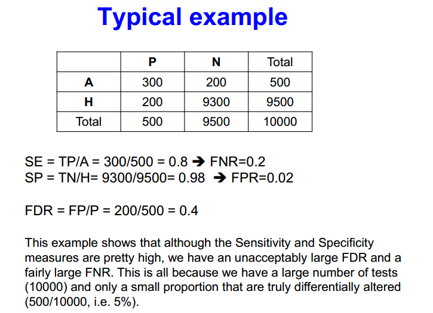
方差分析
单因素方差分析
分析流程：

形成列联表

课件8中有一个step-by-step ANOVA按步骤进行单因素方差分析计算。
R中一步搞定可以使用aov()与lm()函数。参考
方差分析主要用于两个及以上不同组实验的分析，探究整体是否存在显著性，如果存在显著性差异，进一步需要配对t检验找出存在差异的组。
R一个非常好用的函数是TukeyHSD()。检测方差同质性则使用bartlett.test()，leveneTest()函数。
单因素方差分析可以用oneway.test()函数，设定方差相等时与aov()结果相同。
做方差分析时，需要注意使用的模型(https://wenku.baidu.com/view/5516ebcabe23482fb5da4c5b.html)。大致分为三类：固定效应模型，随机效应模型以及混合效应模型。该概念在李春喜《生物统计学》88页有详细介绍。
简单来说，固定模型指各个处理的效应是一个固定的常量，比如不同温度条件下小麦籽粒的发芽实验，处理的水平（温度）是特意选择的，所以得到的结论也仅限于所选定的这几个水平；随机效应指各处理的效应是随机因素，比如不同纬度下桃树对地理条件的适应情况，由于气候、土壤等条件无法人为控制，属于随机因素，就需要随机模型来处理。从而实验所得出的结论可以推广到随机因素的所有水平上。混合模型即为前两者的叠加。
不同的模型在平方和和自由度的计算是相同的，但是假设检验时F值得计算公式是不同的。模型分析的侧重点也不同。对于单因素方差分析来说，固定模型与随机模型无多大区别。


非参数检验
与t检验类似，方差分析中面对方差不同质或者所处理的数据是有序性而不是数值型时无能为力。因此需要相应的非参数检验来解决这样一类问题。Kruskal-Walls test就是为这个目的开发的。它就像多重样本（multiple-sample）版本的Wilcoxon秩和检验一样。
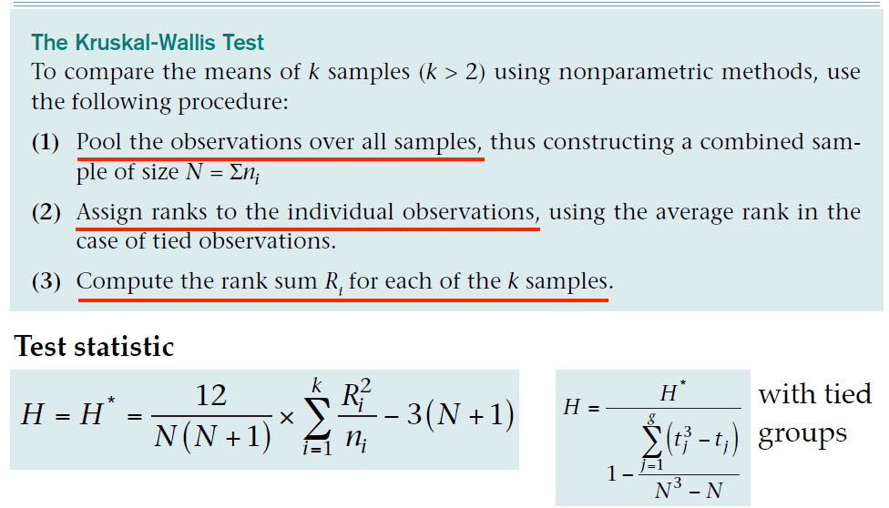
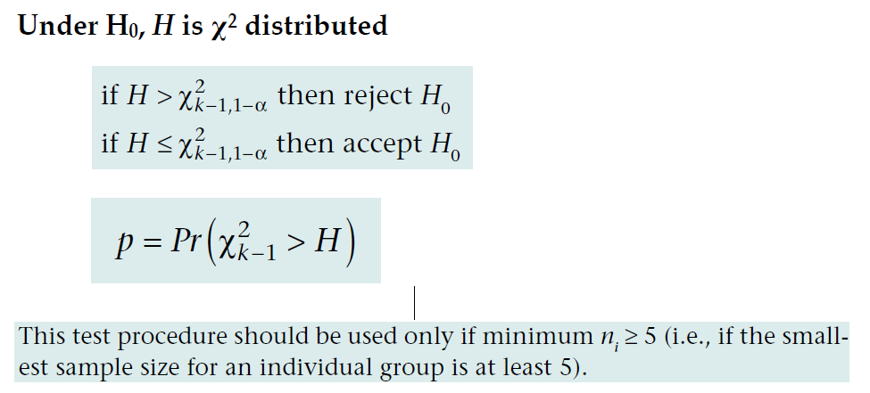
下面截一个实例（对于前面的公式看，比较容易理解）。


在R中，使用函数kruskal.test()即可用进行K-W检验。
一但拒绝原假设（有显著性差异），接着使用pairwise.wilcox.test()进行两两配对检验，可用指定矫正方法。
两因素方差分析
单因素方差分析指一个处理水平，两因素方差分析指两个，多个因素的分析类似。
比如探究某几种药物对某种病（比如癌症）的治疗效果，这个是单因素的，如果我们将病人按性别分为两类，这时就会多出一个性别因素，构成了两因素的方差分析（药物和性别对癌症治疗效果的影响）。
说实话，这个理解不难，手工计算就比较麻烦了。在R中使用函数加上公式可以很容易地表达因变量和自变量的关系，从而完成方差分析。

下面只截取相应的公式（分随机和固定效应模型）
两因素重复测量方差分析

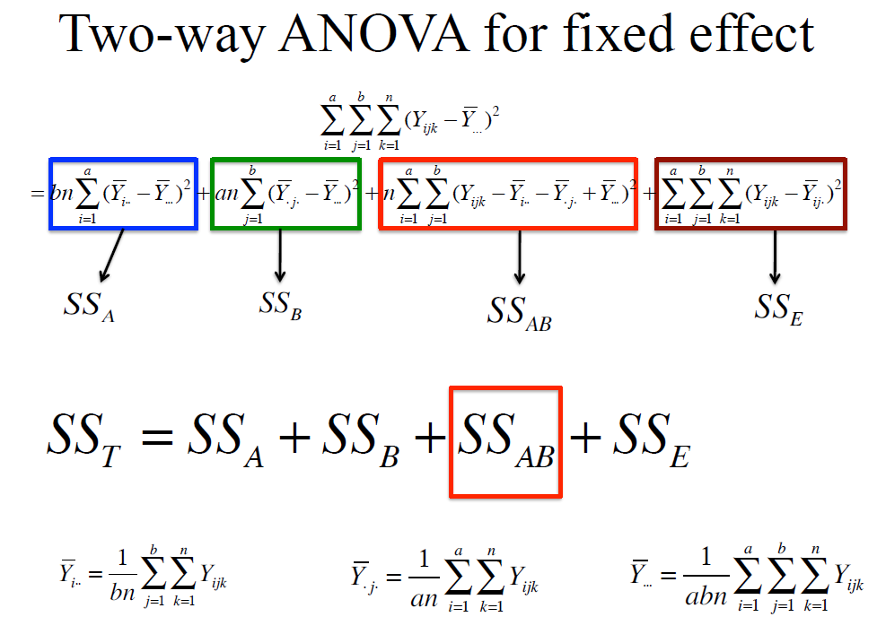


如果存在显著性差异，在R中使用TukeyHSD()函数计算两两之间的显著性。
无重复测量两因素方差分析
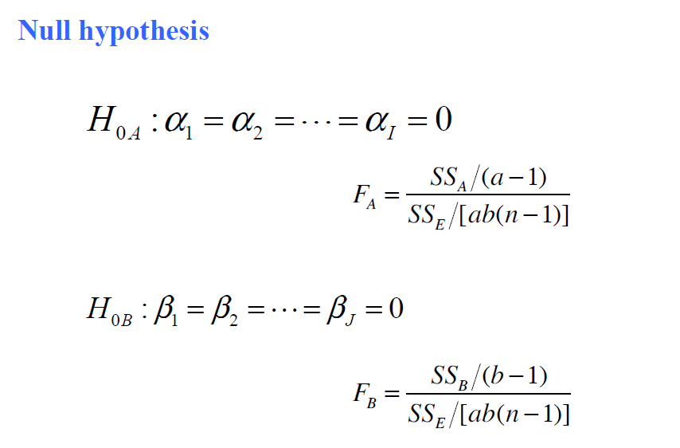
这个其实相当于重复测量的简化版了。少了一个假设条件，之前的公式同样适用但是没有了多个测量值计算平均数等一些计算。
随机效应模型的两因素方差分析

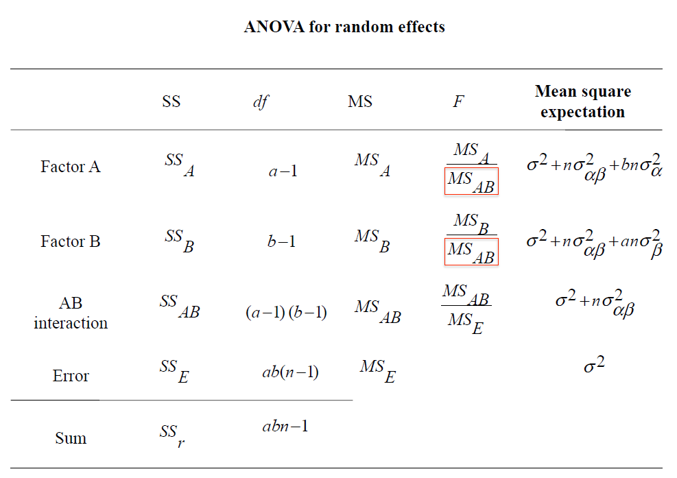
混合模型的两因素方差分析
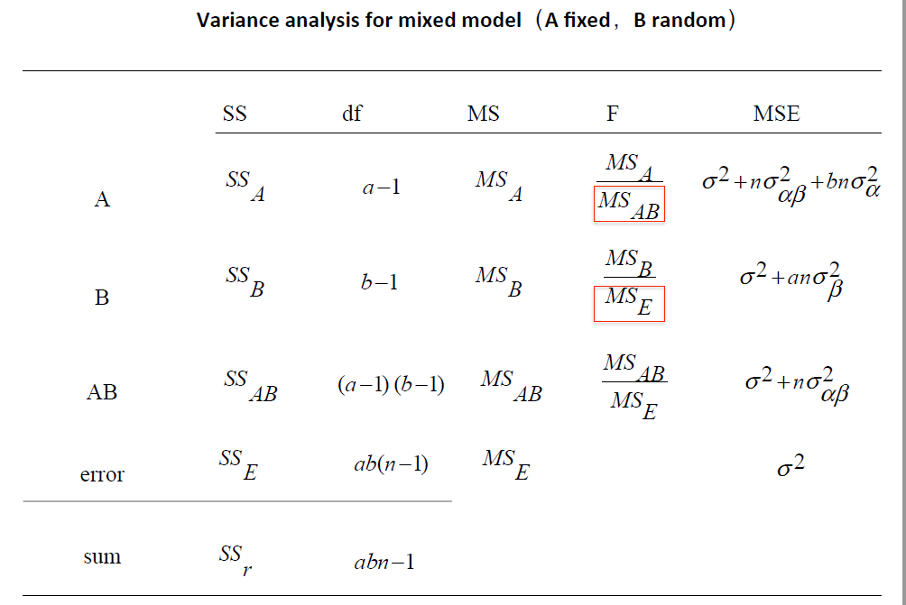
小结
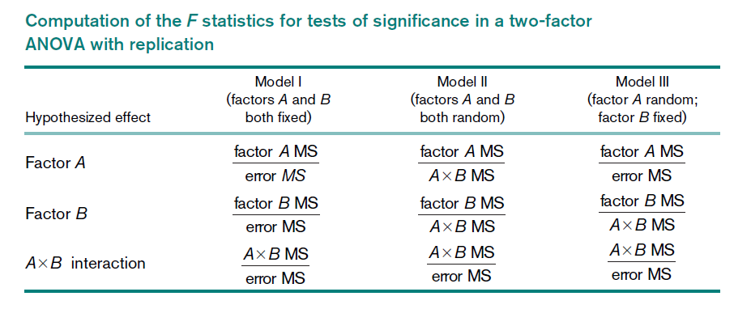
也许方差分析中涉及到的公式略显复杂，计算难度也有很大提升。但是就一个使用者而言，应当理解它的基本内涵和适用范围：它是利用F检验对两个或者两个以上样本的参数检验手段，需要同t检验（可能相对的非参数检验）结合使用；从而完成从多个样本中探寻某些因素对于两个样本之间的影响的过程。它的分析流程如下：
我之前学习时有记录一些方差分析的实例，可以通过wordpress链接-方差分析到相关博文进行查看。
缺失值处理
这里涉及一些方法和相应的R包，估计需要时查看说明。
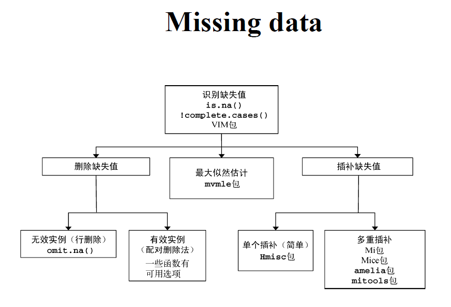

回归分析
从许多方面来看，回归分析是统计学的核心。它其实是一个广义的概念，通指那些用一个或多个预测变量（也称为自变量或解释变量）来预测响应变量（也成因变量、效标变量或结果变量）。
回归是一个令人困惑的词，因为它有许多特异的变种。R提供了相应强大而丰富的功能同样令人困惑。有统计表明，R中做回归分析的函数已经超过200个。（回归分析相关R的一些概念和函数、包的操作请链接到wordpress-回归分析查看和了解。）
方差分析与回归分析的区别与联系
方差分析与回归分析是有联系又不完全相同的分析方法。方差分析主要研究各变量对结果的影响程度的定性关系，从而剔除对结果影响较小的变量，提高试验的效率和精度。而回归分析是研究变量与结果的定量关系，得出相应的数学模式。在回归分析中，需要对各变量对结果影响进行方差分析，以剔除影响不大的变量，提高回归分析的有效性。 方差分析(Analysis of Variance，简称ANOVA)，又称“变异数分析”，是R.A.Fisher发明的，用于两个及两个以上样本均数差别的显著性检验。 由于各种因素的影响，研究所得的数据呈现波动状。造成波动的原因可分成两类，一是不可控的随机因素，另一是研究中施加的对结果形成影响的可控因素。方差分析是从观测变量的方差入手，研究诸多控制变量中哪些变量是对观测变量有显著影响的变量。 回归分析是研究各因素对结果影响的一种模拟经验方程的办法，回归分析（regression analysis)是确定两种或两种以上变量间相互依赖的定量关系的一种统计分析方法。运用十分广泛，回归分析按照涉及的变量的多少，分为一元回归和多元回归分析。 回归分析中，会用到方差分析来判断各变量对结果的影响程度，从而确定哪些因素是应该纳入到回归方程中，哪些由于对结果影响的方差小而不应该纳入到回归方程中。
线性回归
我们的重点是普通最小二乘（OLS）回归法，包括简单线性回归、多项式回归和多元线性回归。
OLS回归是通过预测变量的加权和来预测量化的因变量，其中权重是通过数据估计而得到的参数。

（图片中几个字打错了......）
线性回归非常简单，高中知识便有相关的解法介绍。科学研究也较为常用，它是通过对数据计算最小残差平方和来寻找自变量与因变量之间是否存在线性关系。在R中，aov()函数以及lm()函数（常用后者，前者一般用来做方差分析）都会用来计算线性回归。
忽略推导过程，计算相关系数和截距的公式为：
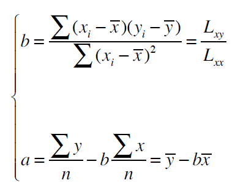
R的用法很简单，格式为myfit <- lm(formula,data)
公式的构建类似于方差分析，下面列出常用的符号：
| 符号 | 用途 |
|---|---|
| ~ | 分隔符号，左边为响应变量（因变量），右边为解释变量（自变量） |
| + | 分隔预测变量（因变量） |
| : | 表示预测变量的交互项 |
| * | 表示所有可能交互项的简洁方式 |
| ^ | 表示交互项达到某个次数 |
| . | 表示包含除因变量外的所有变量 |
| – | 减号，表示从等式中移除某个变量 |
| - | 删除截距项 |
| 从算术的角度来解释括号中的元素 | |
| function | 可在表达式中用的数学函数。例如，log(y) ~ x + z + w |
除了lm()，下表列出了一些有用的分析函数，对拟合得到的模型做进一步的处理和分析。
| 函数 | 用途 |
|---|---|
| summary() | 展示拟合模型的详细结果 |
| coefficients() | 列出拟合模型的模型参数 |
| confint() | 提供模型参数的置信区间（默认95%) |
| fitted() | 列出拟合模型的预测值 |
| residuals() | 列出拟合模型的残差值 |
| anova() | 生成一个拟合模型的方差分析表，或者比较两个或更多拟合模型的方差分析表 |
| vcov() | 列出模型参数的协方差矩阵 |
| AIC() | 输出赤池信息统计量 |
| plot() | 生成评价拟合模型的诊断图 |
| predict() | 用拟合模型对新的数据集预测响应变量值 |
上述已经提过方差分析与回归分析的区别与联系，在我们进行回归分析时，往往需要方差分析来剔除无关或者影响力较小的自变量，从而简化回归模型（李春喜《生物统计学》（第四版）124-129页包含了进行简单线性回归所有的计算步骤和后续的F检验、t检验）。
实际数据计算时，先计算回归分析的一级数据和二级数据。然后再计算一些目标值，比如回归平方和，残差平方和等等。
我写出一些重要数据计算公式：
回归参数：
其他一些数据的计算也就比较好理解了。
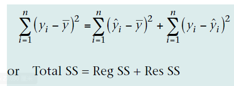
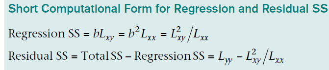
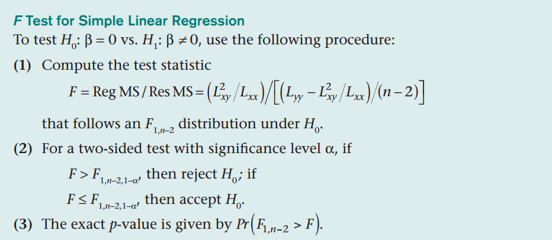
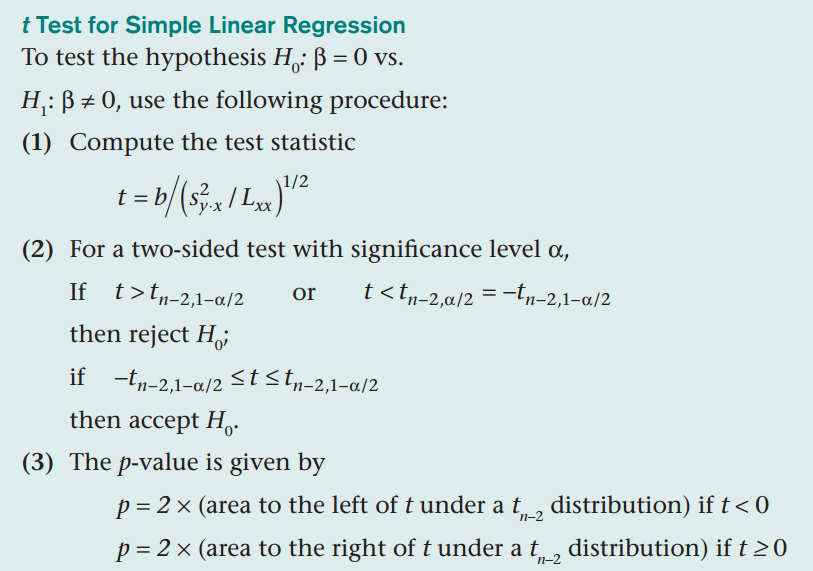
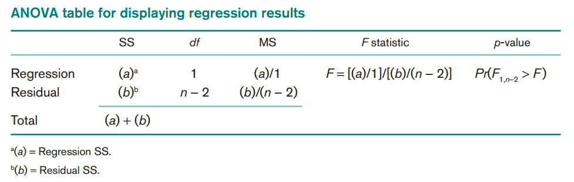
在使用R语言时，直接使用aov()对复杂模型和简化模型比较即可，看是否存在显著性差异，然后决定是否可以用简单模型替换复杂模型（之前提供的回归分析链接有实例）。
那么怎么评价模型拟合的好坏呢？这里有一个常见的参数。
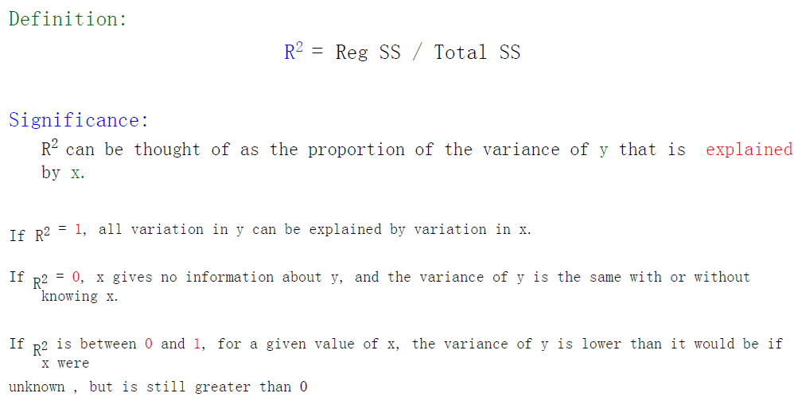
非线性回归
回归的概念本质是说对数据进行曲线拟合，除了线性关系，科研中我们还会碰到其他因变量与自变量的定量关系，比如指数，幂函数等等。我们可以通过变换把它们转变为类似线性的关系，也就是非线性回归了。
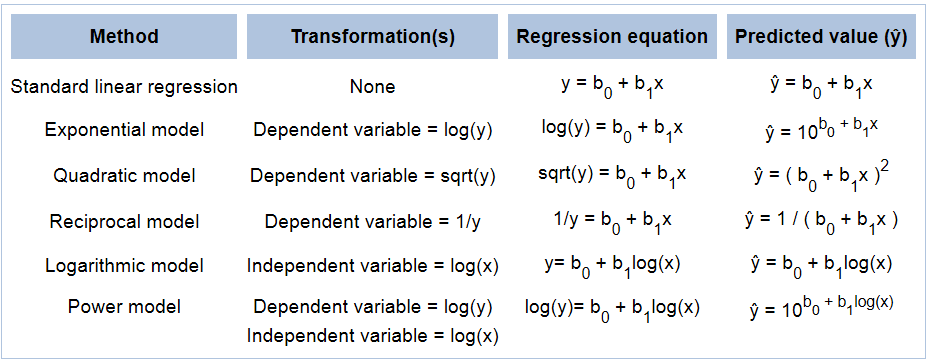
在R中，我们依旧使用lm()函数，这时，公式可以根据数据添加相应数学函数，比如lm(log(y)~x)实现指数函数的线性化，在绘图时，可以用abline()或line()函数添加拟合曲线（前者可以以模型作为参数输入）。
相关分析
相关系数公式
相关系数的平方为决定系数，表示为，在拟合线性回归曲线时常常见到的参数就是这个。
r的取值从-1到1,0表示完全无关，绝对值越接近1，相关程度越高。
回归系数b与相关系数r的关系：
如果设， (这不正是方差吗) 那么有
多元线性回归
多元线性回归可以看作是简单线性回归的一个拓展，回归系数和自变量不再是单个的，而是一组变量。
其公式形式为：
其几何解释由简单的二元平面上的直线拟合变为多维空间中的直线拟合。
在各种数据参数的计算时可能公式会变得比较繁琐，但在使用R进行多元线性回归分析时，跟线性回归基本一致，使用lm()函数即可。
比如lm(y~x1+x2)可以进行二元线性回归，lm(y~x1*x2)加上交互项（x1与x2交叉因素）的探索。多维也是如此。
可以看到，这里b不再是一个值，而是多个。因此每一个自变量对于的b表示一个部分相关系数。它的含义为：一个预测变量（因变量）增加一个单位，其他预测变量保持不变时，因变量将要增加的数量。
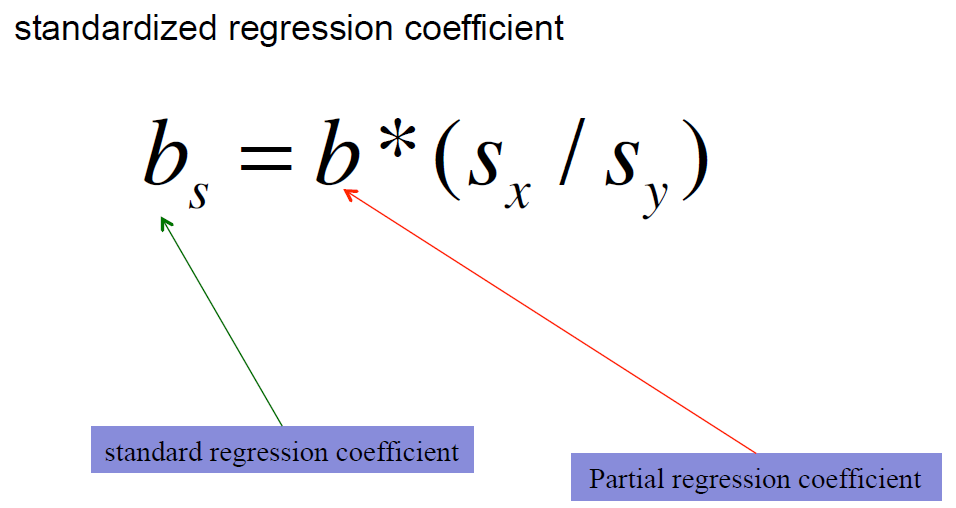
举例：
探究出生重量(x1)和年龄对血压(x2)的影响，如果，（原始数据未列出，仅关注计算）那么
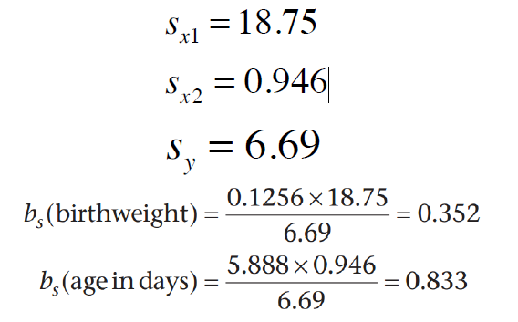
我们可以得到以下结果：
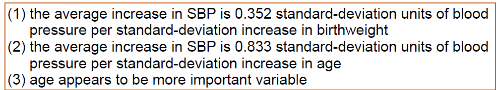
拟合优度的判断：
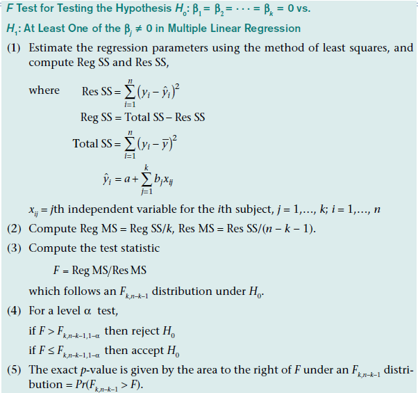
逻辑回归
Logistic回归与多重线性回归实际上有很多相同之处，最大的区别就在于它们的因变量不同，其他的基本都差不多。正是因为如此，这两种回归可以归于同一个家族，即广义线性模型（generalizedlinear model）。
这一家族中的模型形式基本上都差不多，不同的就是因变量不同。
- 如果是连续的，就是多重线性回归；
- 如果是二项分布，就是Logistic回归；
- 如果是Poisson分布，就是Poisson回归；
- 如果是负二项分布，就是负二项回归。
Logistic回归的因变量可以是二分类的，也可以是多分类的，但是二分类的更为常用，也更加容易解释。所以实际中最常用的就是二分类的Logistic回归。
Logistic回归的主要用途：
- 寻找危险因素：寻找某一疾病的危险因素等；
- 预测：根据模型，预测在不同的自变量情况下，发生某病或某种情况的概率有多大；
- 判别：实际上跟预测有些类似，也是根据模型，判断某人属于某病或属于某种情况的概率有多大，也就是看一下这个人有多大的可能性是属于某病。
Logistic回归主要在流行病学中应用较多，比较常用的情形是探索某疾病的危险因素，根据危险因素预测某疾病发生的概率，等等。例如，想探讨胃癌发生的危险因素，可以选择两组人群，一组是胃癌组，一组是非胃癌组，两组人群肯定有不同的体征和生活方式等。这里的因变量就是是否胃癌，即“是”或“否”，自变量就可以包括很多了，例如年龄、性别、饮食习惯、幽门螺杆菌感染等。自变量既可以是连续的，也可以是分类的。
通过对数据发生概率进行logit转换，我们可以生成线性的逻辑回归模型。
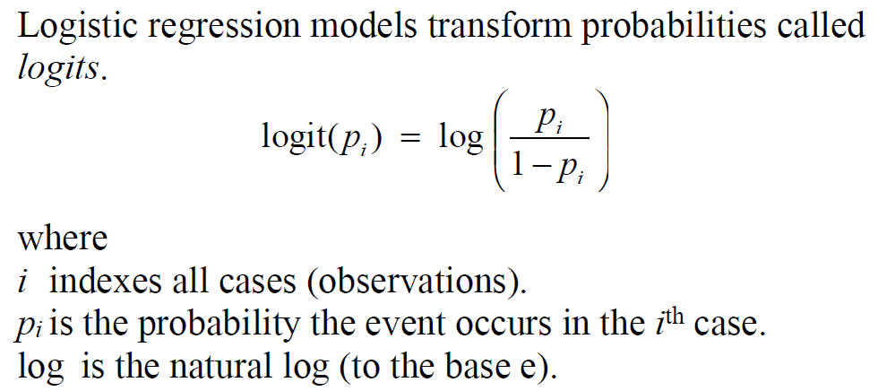
图形化的效果为：
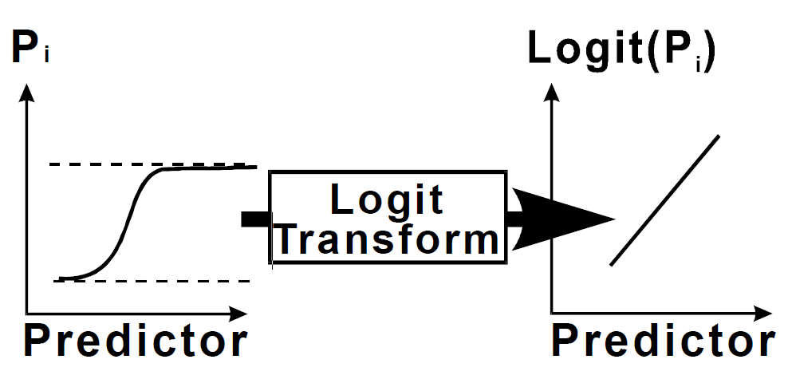
由此得到逻辑回归模型：
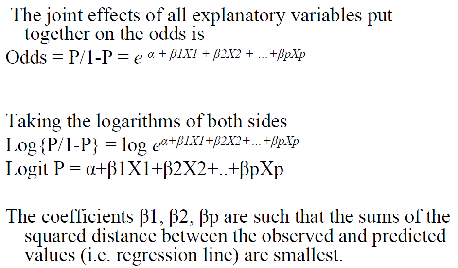
在R中，逻辑回归作为广义线性模型的一部分被介绍，可以参考我整理的广义线性模型。下面列出常用的连接函数和连用函数。
glm()函数
基本形式：glm(formula, family=family(link=function), data=)
| 分布族 | 默认的连接函数 |
|---|---|
| binomial | (link = “logit”) |
| gaussian | (link = “identity”) |
| gamma | (link = “inverse”) |
| inverse.gaussian | (link = “1/mu^2”) |
| poisson | (link = “log”) |
| quasi | (link = “identity”, variance=”constant”) |
| quasibinomial | (link = “logit”) |
| quasipoisson | (link = “log”) |
glm()函数可以拟合许多流行的模型，包括Logistic回归、泊松回归和生存分析。
连用的函数
与glm()函数连用的一些函数
| 函数 | 描述 |
|---|---|
| summary() | 展示拟合模型的细节 |
| coefficients(), coef() | 列出拟合模型的参数（截距项和斜率） |
| confint() | 给出模型参数的置信区间（默认为95%） |
| residuals() | 列出拟合模型的残差值 |
| anova() | 生成两个拟合模型的方差分析表 |
| plot() | 生成评价拟合模型的诊断图 |
| predict() | 用拟合模型对新数据集进行预测 |
| deviance() | 拟合模型的偏差 |
| df.residual() | 拟合模型的残差自由度 |
具体实例可以参考逻辑回归的一个简单实例。
部分相关与多重相关
部分相关，也称为偏相关。偏相关分析是指当两个变量同时与第三个变量相关时，将第三个变量的影响剔除，只分析另外两个变量之间相关程度的过程。
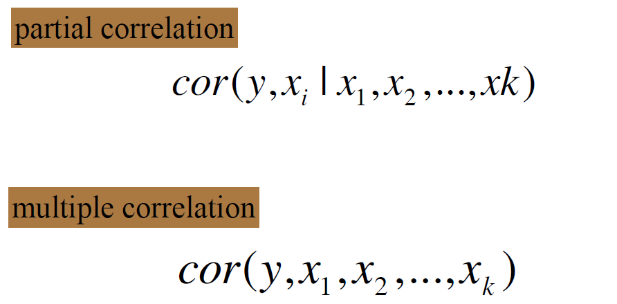
多重相关就是整体的相关系数r。
基因表达与富集分析
用方差分析差异基因表达发布在http://www.jianshu.com/p/f697719ee847
（就在刚才，文件除了问题，写好的全不见啦~~还好github上已经发布了之前的备份，好吧，重新换个思路整理）。
这个部分完全已经是对生物统计学知识整合的一类实例了。如无需要，可以跳过。
先列出参考链接：
GO
Gene Ontology可分为分子功能（Molecular Function），生物过程（biological process）和细胞组成（cellular component）三个部分。蛋白质或者基因可以通过ID对应或者序列注释的方法找到与之对应的GO号，而GO号可对于到Term，即功能类别或者细胞定位。 功能富集分析: 功能富集需要有一个参考数据集，通过该项分析可以找出在统计上显著富集的GO Term。该功能或者定位有可能与研究的目前有关。 GO功能分类是在某一功能层次上统计蛋白或者基因的数目或组成，往往是在GO的第二层次。此外也有研究都挑选一些Term，而后统计直接对应到该Term的基因或蛋白数。结果一般以柱状图或者饼图表示。 1.GO分析 根据挑选出的差异基因，计算这些差异基因同GO 分类中某（几）个特定的分支的超几何分布关系，GO 分析会对每个有差异基因存在的GO 返回一个p-value，小的p 值表示差异基因在该GO 中出现了富集。 GO 分析对实验结果有提示的作用，通过差异基因的GO 分析，可以找到富集差异基因的GO分类条目，寻找不同样品的差异基因可能和哪些基因功能的改变有关。 2.Pathway分析 根据挑选出的差异基因，计算这些差异基因同Pathway 的超几何分布关系，Pathway 分析会对每个有差异基因存在的pathway 返回一个p-value，小的p 值表示差异基因在该pathway 中出现了富集。 Pathway 分析对实验结果有提示的作用，通过差异基因的Pathway 分析，可以找到富集差异基因的Pathway 条目，寻找不同样品的差异基因可能和哪些细胞通路的改变有关。与GO 分析不同，pathway 分析的结果更显得间接，这是因为，pathway 是蛋白质之间的相互作用，pathway 的变化可以由参与这条pathway 途径的蛋白的表达量或者蛋白的活性改变而引起。而通过芯片结果得到的是编码这些蛋白质的mRNA 表达量的变化。从mRNA 到蛋白表达还要经过microRNA 调控，翻译调控，翻译后修饰（如糖基化，磷酸化），蛋白运输等一系列的调控过程，mRNA 表达量和蛋白表达量之间往往不具有线性关系，因此mRNA 的改变不一定意味着蛋白表达量的改变。同时也应注意到，在某些pathway 中，如EGF/EGFR 通路，细胞可以在维持蛋白量不变的情况下，通过蛋白磷酸化程度的改变（调节蛋白的活性）来调节这条通路。所以芯片数据pathway 分析的结果需要有后期蛋白质功能实验的支持，如Western blot/ELISA，IHC（免疫组化），over expression（过表达），RNAi（RNA 干扰），knockout（基因敲除），trans gene（转基因）等。 3.基因网络分析 目的：根据文献，数据库和已知的pathway 寻找基因编码的蛋白之间的相互关系(不超过1000 个基因)。
差异表达基因分析
通过研究基因的差异表达，我们可以发现
- 细胞特异性的基因；
- 发育阶段特异性的基因；
- 疾病状态相关的基因；
- 环境相关的基因；
- ...
基本方法就是以生物学意义的方式计算基因表达量，然后通过统计学分析表达量寻找具有统计学显著性差异的基因，从而
- 选择合适的基因
- 衡量结果的可靠性
分析方法
寻找差异表达基因有三种方式： 第一种是计算Fold change（倍数变化），十分简单粗暴的方法，计算方法如下：
- E = mean(group1) B=mean(group2)
- FC = (E-B) / min(E,B)
说人话就是，基因A和基因B的平均值之差与两者中较小的比值。选择2-3倍的基因作为结果（为什么是2-3倍，就是大家约定俗成）。

但是简单粗暴的用2到3倍作为阈值，对于低表达的基因，3倍也是噪音，那些高表达的基因，1.1倍都是生物学显著了。更重要的没有考虑到组内变异，没有统计学意义。所以发文章肯定这个图只能作为附录了。
第二种就是统计检验，写文章的时候总需要给出一个p值告诉主编这个结果可信的（虽然p值也存在争论）。 复习一下：p值指的碰巧是拒绝零假设机会。P值越大假阳性越低，同时真实结果也可能会剔除。
注： 基因表达分析的零假设是： 基因在不同处理下的表达量相同。
对于基因芯片的数据而言，由于样本服从正态分布，所以可以用t-test（双处理）或anova分析（多处理以上）。
T检验适用于只有两个处理的实验设计，如植物叶片在相同处理第一天和第二天的基因表达差异。

进行T-test检验时要注意：是双尾检验（存在差异）还是单尾检验（显著性上调或下降），两个样本的总体是不是等方差（标准T检验还是Welch’s test）
如果存在多于两个处理（条件），就需要用到ANOVA分析了。ANOVA分析能主要是研究结果之间的差异是如何引起的，具体请移步到我写方差分析教程。 对于基因表达而言，研究目标是，对于同一个基因而言，他们之间的差异是处理不同造成，还是因为系统误差造成。

当然你可以研究，不同基因的表达差异是由因为处理不同，还是基因不同，还是系统误差，还是其中一些的交互作用。
上面都是针对基因芯片的样本服从正态分布进行的统计检验。现在的RNA-Seq，它的抽样过程是离散的，结果是count，服从泊松分布，样本间的差异是服从负二向分布，显然不能按照上述方法分析。
方差分析（ANOVA)和线性回归分析(regression)都是同一时期发展的两套紧密相连的理论。方差分析考量的是离散型自变量(因子）对连续型应变量（响应变量）的模型分析，而线性回归分析只要求响应变量是连续的，对于自变量无要求。如果响应变量不是连续型分布，就要使用更加一般化的广义线性模型（generalized linear model),通过一个连接函数变换响应变量期望，将响应变量的期望与自变量建立线性关系。
因此，我们可以用广义线性模型去分析RNA-seq前期分析得到的离散型结果（count）
方差分析一般用于分析有计划的实验结果，比如说不同处理下的水稻产量。回归分析一般分析没有计划的数据，比如说你可以找到大量体检的数据，只分析其中性别和身高对体重的影响。所以两者各有侧重，不要拿大炮轰蚊子。
统计检验相对于fold change具有统计意义，不需要参考样本，需要处理随机取样。但是需要重复（ANOVA推荐4-10重复），但由于资金和材料等原因，不一定能够满足。此外，对于1000个基因，就要做1000次ANOVA或t-test，最后的p值会有一定的假阳性，因此要做p值矫正（FDR）筛选。
注：推荐在统计检验前过滤表达量低，也就如果一个基因在所有样本中count均低于某一阀值，请在分析前剔除。这个阀值也是约定俗成，一般设置为3。
第三种：Fold Change + 统计检验。说一比较尴尬的事情，在统计检验中你找到越多的差异表达基因，在p值矫正之后，你反而找不到差异表达基因。也就是说，如果在结果中存在大量滥竽充数的所谓的DE基因，那么在严格的p值矫正筛选后，反而会误删真实的DE基因。
因此在p值矫正之前，你先要手动剔除一部分明显就是假阳性的DE基因。这个步骤就需要用到前面的fold-change分析。 我们可以通过火山图来看看如何确定区间：

实战演练
为了方便理解，我们选用同一组数据进行实际操作。默认你懂基本的R语言操作，如安装R包，查看帮助文件等。 正式学习之前，先感谢一下Bioconductor。 根据他们提供流程，我学习到如何进行RNA-Seq分析。
- http://www.bioconductor.org/help/workflows/RnaSeqGeneEdgeRQL/
- http://www.bioconductor.org/help/workflows/rnaseqGene/
- http://www.bioconductor.org/help/workflows/RNAseq123/
- http://www.bioconductor.org/help/workflows/ExpressionNormalizationWorkflow/
后续的处理过程请详细参考原文：http://www.jianshu.com/p/b55276e46f0c
富集分析
基因分析整理：
- 研究基因表达的有如下工具：RNA-Seq，microarray， qRT-PCR等（欢迎补充）
- RNA-Seq，microarray一般用在探索性阶段，qRT-PCR用于验证
- RNA-Seq和microarray由于他们的实验方式不同，导致寻找差异表达基因的统计学方法也不同。其中microarray使用寡核苷酸作为探针进行杂交，基因表达量与亮度正相关，而亮度是一个连续型变量，因此大多认为结果是服从正态分布。而RNA-Seq的测序结果是一条条read，是一种离散抽样过程，因此认为是服从泊松分布。
- ANOVA和简单线性模型都是广义线性模型的特殊情况。ANOVA是研究名义型解释变量和连续型解释变量的关系，简单线性模式是研究连续型解释变量和连续型解释变量的关系。而广义线性模式没特殊要求。
- 在3,4的背景下，microarray一般用t检验（两个条件），ANOVA分析（多个条件），最常用limma（线性模型）进行检验。RNA-Seq有许多基于count的R包，如DESeq，DESeq2,（基于负二向分布广义线性模型）
- 以上要求你每个条件都要有3个重复（目前投稿要求），你要是老板穷，一个重复都不给，那你去Google解决方案吧。
- 用R作差异表达分析大致分为以下几步：1）根据软件包要求导入数据；2）数据预处理，把那些只有0或1计数结果的基因去掉，提高效率。这一步还可以进行探索性数据分析；3）跑程序，得到结果；4）对结果进行可视化，看看基因聚类等结果，这一步不是必须的，但却是展示数据最好的手段了。
为什么要做基因富集分析
在基因差异表达分析之后，你得到了好多p值特别小（也就是显著性很高）的基因，那么下一步你想做什么？
- 选择一些基因用于验证？
- 对其中基因进行后续研究？
- 在结果中把这些基因都放在后面？
- 尝试着把所有基因相关的文献都都读读看（劝你放弃这个念头）？
- 欢迎补充
这些想法都是非常顺理成章的，但是不要着急。 首先，差异表达找到的基因往往很多，你简单的粗暴去找每一个基因的详细资料，显然不太现实； 其次，如果我们单纯觉得某一个基因和你研究的课题相关，或者说你其实已经找到了一个有可能的基因（或者你只是希望用一些高大上的实验验证一下）那么这个行为是不是有太多主观性，存在一些偏见。 当然，你觉得基因就是你要找的，可是万一它只是碰巧来打酱油的呢，这不就是很尴尬了。 所以为了让审稿人相信你的结果，你就需要做一个基因富集分析哦。
知乎中一个颇为通俗的理解为
基因富集分析是分析基因表达信息的一种方法，富集是指将基因按照先验知识，也就是基因组注释信息进行分类。 人类有约30,000个基因，人与人之间的基因序列相似度高达99.9%，也就是说，人们相互之间仅有30个基因的差别，而正是这大约30个基因的差别，导致了我们长得不同，性格也不同。 举这样一个例子，我发现规律的作息与适当的运动让我智商变高了，我想知道让我智商变高了的基因是哪些？那么我取之前作息混乱，成天堆坐在电脑前的基因表达数据和智商提高了之后的表达数据直接对比进行分析是不是就可以了呢？这种方法也叫作单基因分析，这种方法的缺点包括：
- 基因表达谱数据固有噪音很高，当两组数据表达量差别不大时，很容易出现假阴性结果。（常用的表达谱测试方法包括microarray和mRNA-seq，各有利弊，前者前两年很火，后者现在比较流行。具体原理方法、优缺点wiki上介绍的很清楚。）
- 未考虑基因间相互作用，很难给出合理解释，当对比之后，我发现50个基因不一样，可是除此之外，我无法判断这50个基因有什么样的联系？是什么信号通路让我智商变高了？知其然而不知其所以然。
- 可重复性差，生物实验一般都要求至少重复三遍，那么第二次实验的时候，很有可能不是50个基因，谁多谁少根本说不清楚。
考虑到这些缺点，2005年提出了基于基因集定义的基因富集分析方法，很多人管单基因分析叫bottom-up，富集分析叫top-down。 首先要定义基因集(gene set)，也就是基于我们的先验知识（基因组注释信息），将基因富集，可以想象成，用一堆代表基因功能的箱子（bin）把具有相同或相似功能的基因装起来，起到了降维的作用，当然，每个基因可能同时参与好几种功能，这种cross-talk我这里就不说了。 这样，得到这两组数据后，我们所分析的不是单个基因表达的差异，而是箱子与箱子之间的差异。比如我们发现，运动前后的主要差异集中在消化基因上面，那么我就有理由说，规律作息和适当运动让我消化变好、营养吸收充分进而智商提高（我编的，别信...）。由此，我们得到的数据更容易解释。
当我们用组学测定了一大堆分子之后，我们希望站在更高的角度去看这些分子和那些生物学过程相关。那么通常各种注释，对这些基因/蛋白进行分类，那么从分类的比例上，是不能草率下结论。我们需要把总体的分布考虑进去。和某个注释/分类是否有相关性，把基因分成属于这一类，和不属于这一类两种，这就好比经典统计学中的白球和黑球的抽样问题。
基因富集分析(gene set enrichment analysis)是在一组基因或蛋白中找到一类过表达的基因或蛋白。一般是高通量实验，如基因芯片，RNA-Seq，蛋白质组学（质谱结果）的后续步骤。
基因富集分析需要我们提供某一类功能基因的集合用于背景，常用的注释数据库如：
- The Gene Ontology Consortium: 描述基因的层级关系
- Kyoto Encyclopedia of Genes and Genomes: 提供了pathway的数据库。
这个也有很多方法可以做检验，经典的有卡方检验和fisher’s exact test。对于２x２表来说，卡方检验通常也只能做为近似估计值，特别是当sample size或expected all count比较小的时候，计算并不准确。 fisher’s exact test，名副其实，真的就比较exact，因为它使用的是超几何分布来计算p值。这也是为什么fisher’s exact test和超几何模式计算的p-值是一样的。通常各种软件做GO富集性分析，都是使用超几何分布进行计算。IPA软件则是使用fisher’s exact test来检验基因在某个网络中是否富集。
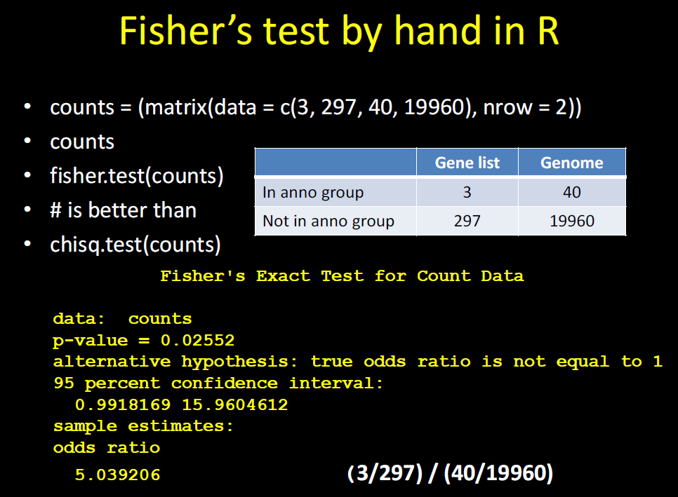
实例：一个有钱人是什么样的

百度找到搜狐财经一篇文章《大数据告诉你真正的有钱人是什么样》的有钱人的学历分布情况，高学历人群（本科以上，因为本科生太多了）所占的比例是9.4%，其他都是一般学历占90.6%。这时候，有些公众号就可以开始不带脑子的说了，读书没什么用呀，有钱人中都是一般学历的呀，以后读书读到大学就行了，甚至也可以不上本科呀（34.2%本科和本科以下）。 你每年回家总能回去看到有人炫耀说，虽然我有钱，可是读书太少了，都不能和你们读书人比的。你总感觉哪里不对劲，但是却又不太方便说出来。
实际上，这就是因为没有考虑到背景。因为高学历本身人数就不多，当然在有钱人里面的人数也就相应不多了。我们要证明有钱人更多是富集高学历这一部分。
| 类别 | 有钱人 | 整体 |
|---|---|---|
| 高学历 | 10 | 50 |
| 一般学历 | 90 | 950 |
| 100 | 1000 |
H0: 是否有钱和学历高无关 Ha: 学历高还是有点用的 然后做一个Fisher精确检验，看看p值。
richer.pop <- matrix(data = c(10,90,50,950),nrow=2)
fisher.test(richer.pop, alternative = "greater")
Fisher's Exact Test for Count Data
data: richer.pop
p-value = 0.03857
alternative hypothesis: true odds ratio is greater than 1
95 percent confidence interval:
1.052584 Inf
sample estimates:
odds ratio
2.109244p值小于0.05，看来我读个博士让我以后有钱概率变大了。
现在将我们上面的有钱人改成我们找到的基因，整体改成所有基因。高学历表示属于目标注释基因集，一般学历就是非注释基因组.我们就是要判断我们找到的基因更多是在目标注释集中。所以你需要列出下表，然后再做一个fisher.test()。
| 类别 | gene list | Genome |
|---|---|---|
| in anno group | 10 | 50 |
| not in anno group | 290 | 19950 |
| 300 | 20000 |
上述的基本思想就是统计学的白球黑球实验：
在一个黑箱里，有确定数量的黑白两种球，你随机抽取（不放回）M个球中，其中两种球的比例分别是多少？
除了用Fisher精确检验，还有其他统计方法：
- Hypergeometric (fisher精确检验用的就是超几何检验)http://www.bio-info-trainee.com/1225.html
- Binomial: 二项分布要求是有放回，无放回要求整体足够大大到可以近似。
- Chi-squared
chisq.test(counts) - Z
- Kolmogorov-Smirnov
- Permutation http://www.bio-info-trainee.com/1237.html
ORA的方法就是如此的简单，但是有一个问题，就是你如何确定哪些基因是差异表达的，你还是需要设置一个人为的cutoff, 主观能动性成分有点大。
分析方法
在文献Ten Years of Pathway Analysis: Current Approaches and Outstanding Challenges（推荐大家看一遍）作者将研究方法归为三种：
其中第三种方法想的很好就是难度很大。而且贴心的把每一种方法有哪些工具都总结出来了：
如果想动手对实际的芯片数据做富集分析，可以详细参考博文http://www.jianshu.com/p/199b44974480总结的文献方法和相应R包。
PCA与聚类分析
PCA
1.多重共线性--预测变量之间相互关联。多重共线性会导致解空间的不稳定，从而可能导致结果的不连贯。
2.高维空间本身具有稀疏性。一维正态分布有68%的值落于正负标准差之间，而在十维空间上只有0.02%。
3.过多的变量会妨碍查找规律的建立。
4.仅在变量层面上分析可能会忽略变量之间的潜在联系。例如几个预测变量可能落入仅反映数据某一方面特征的一个组内。
降维的目的：
1.减少预测变量的个数
2.确保这些变量是相互独立的
3.提供一个框架来解释结果
降维的方法有：主成分分析、因子分析、用户自定义复合等。
PCA（Principal Component Analysis）不仅仅是对高维数据进行降维，更重要的是经过降维去除了噪声，发现了数据中的模式。
PCA把原先的n个特征用数目更少的m个特征取代，新特征是旧特征的线性组合，这些线性组合最大化样本方差，尽量使新的m个特征互不相关。从旧特征到新特征的映射捕获数据中的固有变异性。
奇异值分解
PCA是奇异值分解SVD的一个特例，想深入理解PCA，我们就需要理解奇异值分解。SVD的数学推导可以参考http://blog.csdn.net/zhongkejingwang/article/details/43053513。
我们接下来看奇异值分解过程：
![[二维实剃刀矩阵M奇异值分解示意图]奇异值分解[Singular <wbr>Value <wbr>Decomposition]](http://upload.wikimedia.org/wikipedia/commons/thumb/e/e9/Singular_value_decomposition.gif/280px-Singular_value_decomposition.gif)
首先，我们看到蓝色的单位圆盘及两个规范的单位矢量。然后我们看到M的作用，它把一个圆扭曲为椭圆。 SVD把M分解成三个简单的变换：旋转V*，沿着被旋转坐标轴的拉伸Σ以及第二个旋转U。椭圆半轴σ1和σ2的长度是M的奇异值。 在线性代数中，奇异值分解（SVD）是实或复矩阵的分解，它在信号处理和统计学中有许多有用的应用。
形式上来说，m*n阶的实或复矩阵M的奇异值分解是形式如下的分解：
其中，U是一个m乘m阶的实或复单位阵，Σ是一个m乘n阶的矩形对角阵，在对角线上有非负的实数值。V*(V的共轭转置）是一个n乘n的实或复单位阵。Σ的对角项Σij称之为M的奇异值。U的m个列以及对应的V的n个列被分别称为M的左奇异矢量和右奇异矢量。
奇异值分解和特征值分解密切相关，即：
- M的左奇异矢量是MM*的特征矢量。
- M的右奇异矢量是M*M的特征矢量。
- M的非零奇异值（可在Σ的对角项上找到）是M乘M以及MM*特征值的非零平方根。
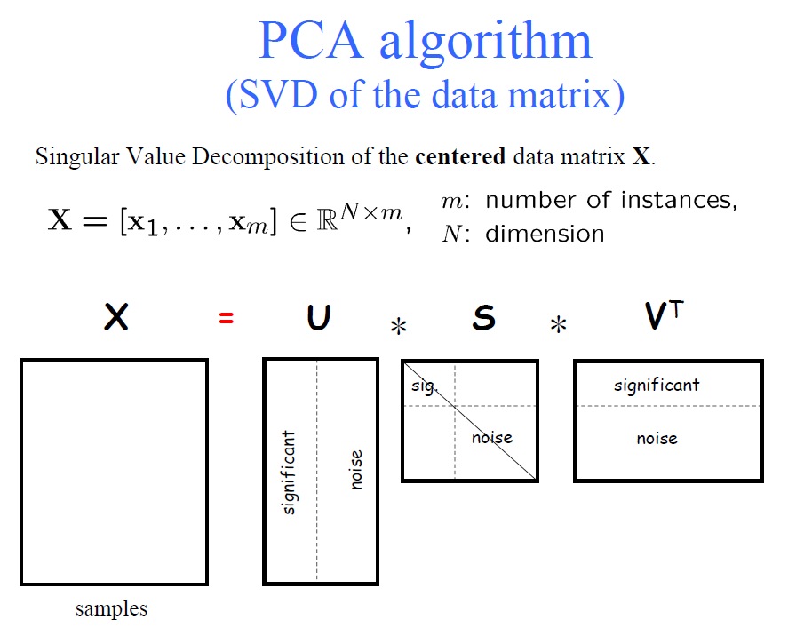
PCA过程：
特征中心化。即每一维的数据都减去该维的均值。这里的“维”指的就是一个特征（或属性），变换之后每一维的均值都变成了0。
计算协方差矩阵。
计算协方差矩阵的特征值和特征向量。
选取大的特征值对应的特征向量，得到新的数据集。
PCA过程计算
首先介绍PCA的计算过程：
假设我们得到的2维数据如下：
![clip_image001[4]](http://images.cnblogs.com/cnblogs_com/jerrylead/201104/201104182110403541.png)
行代表了样例，列代表特征，这里有10个样例，每个样例两个特征。可以这样认为，有10篇文档，x是10篇文档中“learn”出现的TF-IDF，y是10篇文档中“study”出现的TF-IDF。也可以认为有10辆汽车，x是千米/小时的速度，y是英里/小时的速度，等等。
第一步分别求x和y的平均值，然后对于所有的样例，都减去对应的均值。这里x的均值是1.81，y的均值是1.91，那么一个样例减去均值后即为（0.69,0.49），得到
![clip_image002[4]](http://images.cnblogs.com/cnblogs_com/jerrylead/201104/201104182110405460.png)
第二步，求特征协方差矩阵，如果数据是3维，那么协方差矩阵是(协方差计算参考)
![clip_image003[4]](http://images.cnblogs.com/cnblogs_com/jerrylead/201104/201104182110402603.png)
这里只有x和y，求解得
![clip_image004[4]](http://images.cnblogs.com/cnblogs_com/jerrylead/201104/201104182110418982.png)
对角线上分别是x和y的方差，非对角线上是协方差。协方差大于0表示x和y若有一个增，另一个也增；小于0表示一个增，一个减；协方差为0时，两者独立。协方差绝对值越大，两者对彼此的影响越大，反之越小。
第三步，求协方差的特征值和特征向量，得到
![clip_image005[4]](http://images.cnblogs.com/cnblogs_com/jerrylead/201104/201104182110418949.png)
上面是两个特征值，下面是对应的特征向量，特征值0.0490833989对应特征向量为，这里的特征向量都归一化为单位向量。
第四步，将特征值按照从大到小的顺序排序，选择其中最大的k个，然后将其对应的k个特征向量分别作为列向量组成特征向量矩阵。
这里特征值只有两个，我们选择其中最大的那个，这里是1.28402771，对应的特征向量是第二列。
第五步，将样本点投影到选取的特征向量上。假设样例数为m，特征数为n，减去均值后的样本矩阵为DataAdjust(m*n)，协方差矩阵是，选取的k个特征向量组成的矩阵为EigenVectors()。那么投影后的数据FinalData为
这里是
FinalData(10乘1) = DataAdjust(10乘2矩阵)×特征向量
得到结果是
![clip_image012[4]](http://images.cnblogs.com/cnblogs_com/jerrylead/201104/201104182110423800.png)
这样，就将原始样例的n维特征变成了k维，这k维就是原始特征在k维上的投影。
上面的数据可以认为是learn和study特征融合为一个新的特征叫做LS特征，该特征基本上代表了这两个特征。
上述过程有个图描述：
![clip_image013[4]](http://images.cnblogs.com/cnblogs_com/jerrylead/201104/201104182110441716.png)
正号表示预处理后的样本点，斜着的两条线就分别是正交的特征向量（由于协方差矩阵是对称的，因此其特征向量正交），最后一步的矩阵乘法就是将原始样本点分别往特征向量对应的轴上做投影。
如果取的k=2，那么结果是
![clip_image014[4]](http://images.cnblogs.com/cnblogs_com/jerrylead/201104/201104182110452456.png)
这就是经过PCA处理后的样本数据，水平轴（上面举例为LS特征）基本上可以代表全部样本点。整个过程看起来就像将坐标系做了旋转，当然二维可以图形化表示，高维就不行了。上面的如果k=1，那么只会留下这里的水平轴，轴上是所有点在该轴的投影。
这样PCA的过程基本结束。在第一步减均值之后，其实应该还有一步对特征做方差归一化。比如一个特征是汽车速度（0到100），一个是汽车的座位数（2到6），显然第二个的方差比第一个小。因此，如果样本特征中存在这种情况，那么在第一步之后，求每个特征的标准差，然后对每个样例在该特征下的数据除以标准差。
要解释为什么协方差矩阵的特征向量就是k维理想特征，我看到的有三个理论：分别是最大方差理论、最小错误理论和坐标轴相关度理论。（http://blog.csdn.net/jirongzi_cs2011/article/details/9499011）
百度经验也给出了PCA的计算步骤。
用R做PCA
R提供了以下很多函数可以做PCA分析：
- prcomp() (stats)
- princomp() (stats)
- PCA() (FactoMineR)
- dudi.pca() (ade4)
- acp() (amap)
- ...
R的基础安装包中提供了PCA的函数，为princomp()。重点掌握psych包中提供的函数，它提供了比基础函数更丰富和有用的选项。另外输出结果与SAS，SPSS类似。
| 函数 | 描述 |
|---|---|
| principal() | 含多种可选的方差旋转方法的主成分分析 |
| fa() | 可用主轴、最小残差、加权最小平方或最大似然法估计的因子分析 |
| fa.parallel() | 含平行分析的碎石图 |
| factor.plot() | 绘制因子分析或主成分分析的结果 |
| fa.diagram() | 绘制因子分析或主成分的载荷矩阵 |
| scree() | 因子分析和主成分分析的碎石图 |
最常见步骤如下：
- 数据预处理。用户输入原始数据矩阵或者相关系数矩阵到
principal()和fa()函数中。若输入初始数据，相关系数矩阵会被自动计算，在计算前请确保数据没有缺失值。 - 选择因子模型。判断是PCA（数据降维）还是EFA（发现潜在结构）更符合你的研究目标。
- 判断要选择的主成分/因子数目。
- 选择主成分/因子。
- 旋转主成分/因子。
- 解释结果。
- 计算主成分或因子得分。
函数用法
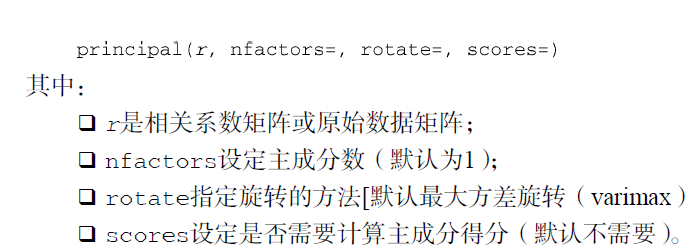
聚类分析
聚类分析指南：http://home.deib.polimi.it/matteucc/Clustering/tutorial_html/index.html
聚类，指将样本分到不同的组中，使得同一组中的样本差异尽可能的小，而不同组中的样本差异尽可能的大。
聚类分析是一种数据归约技术，旨在揭露一个数据集中观测值的子集。它可以把大量的观测值归约为若干类。这里的类被定义为若干个观测值组成的群组，群组内观测值的相似度比群间相似度高。这不是一个精确的定义，从而导致了各种方法的出现。
通俗地来说，聚类分析是一种将数据集中数据进行分类的一个分析过程，分类的方法有很多，它们针对数据集中不同数据特征。所以在做聚类分析的时候，根据数据集的特征选择适当的聚类方法是非常有必要的。
聚类方法大致可以分为以下几类：
- 划分聚类
- 层次聚类
- 密度聚类
- 网格聚类
- 基于模型的方法
- 其他聚类方法
最常用的两种聚类方法是层次聚类和划分聚类。在层次聚类中，每个观测值自成一类，这些类每次两两合并，直到所有的类被聚成一类为止。在划分聚类中，首先指定类的个数K，然后观测值被随机分成K类，再重新形成聚合的类。
这两种方法都对应许多可供选择的聚类算法。前者，常用的有单联动、全联动、平均联动、质心以及Ward方法。对于后者，最常用的是K均值(K-means)和围绕中心点的划分(PAM)。
聚类得到的不同的组成为簇。
一个好的聚类方法将产生以下的聚类：
- 最大化类中的相似性
- 最小化类间的相似性
聚类分析的一般步骤：
有效的聚类分析是一个多步骤的过程，这其中每一次决策都可能影响聚类结果的质量和有效性。以下是11个典型的步骤：
选择合适的变量。选择你感觉可能对识别和理解数据中不同观测值分组有重要影响的变量。
缩放数据。标准化数据，最常用的方法是将每个变量标准化为均值0和标准差为1的变量，代替方法包括每个变量被最大值相除或该变量减去它的平均值并除以变量的平均绝对偏差。代码为：
df1 <- apply(mydata, 2, function(x){(x-mean(x))sd(x)}) # 可以使用scale()函数 df2 <- apply(mydata, 2, function(x){x/max(x)}) df3 <- apply(mydata, 2, function(x){(x - mean(x))/mad(x)})寻找异常点。许多聚类方法对异常值十分敏感。可以通过
outliers包中的函数来筛选异常单变量离群点。mvoutlier包能识别多元变量的离群点的函数。另一种方法是使用对异常值稳健的聚类方法，比如划分聚类。计算距离。虽然所使用的算法差异大，但是通常都需要计算被聚类的实体之间的距离。最常用欧几里得距离，其他可选曼哈顿距离、兰式距离、非对称二元距离、最大距离和闵可夫斯基距离（
?dist查看详细信息）。选择聚类算法。层次聚类对于小样本很实用，划分的方法能处理更大的数据量。
获得一种或多种聚类方法。使用步骤（5）选择的方法。
确定类的数目。
NbClust包中的NbClust()函数提供了30个不同的指标来帮助如何选择。获得最终的聚类解决方案。
结果可视化。
解读类。
验证结果。采用不同的聚类方法或补贴的样本，是否会产生相同的类？
fcp,clv,clValid包包含了评估聚类解的稳定性的函数。
距离度量
两个观测值之间的欧几里得距离定义为：
R中自带的dist()函数能够用来计算矩阵或数据框中所有行之间的距离。格式是dist(x, method=)，这里的x表示输入数据，并且默认为欧几里得距离。函数默认返回一个下三角矩阵，但是as.matirx()函数可使用标准括号符号得到距离。
聚类中常用的标准度量有：
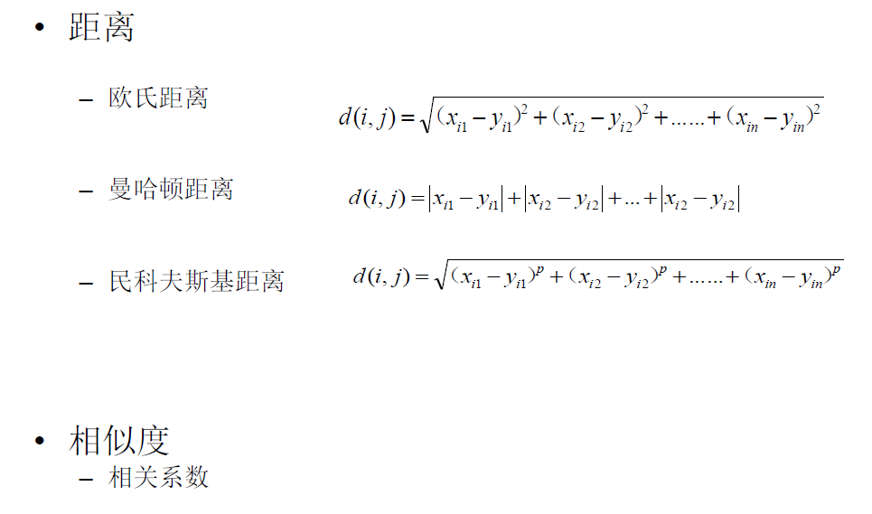

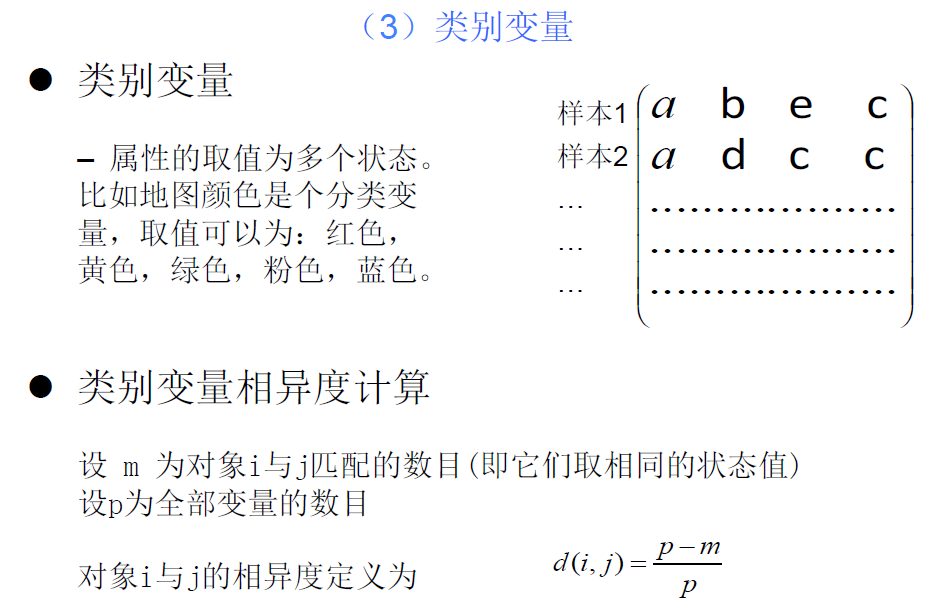
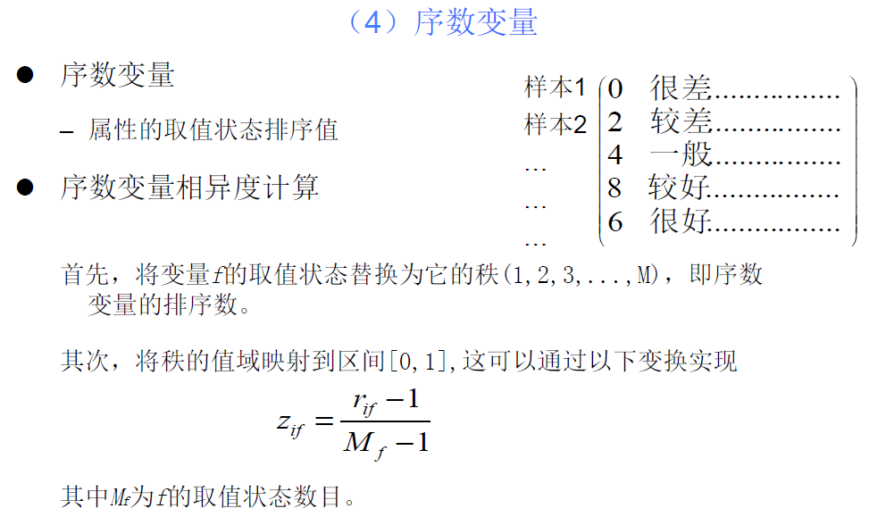
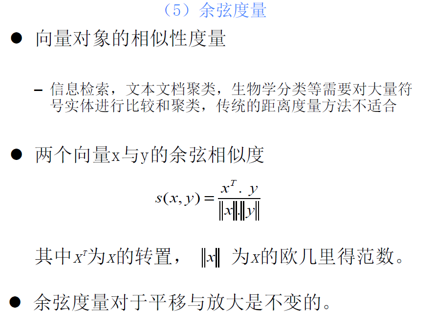
混合数据类型的聚类分析
如果存在其他类型的数据，则需要相异的替代措施，可以使用cluster包中的daisy()函数来获得包含任意二元、名义、有序、连续属性组合的相异矩阵。cluster包中的其他函数可以使用这些异质性来进行聚类分析。例如agnes()函数提供了层次聚类，pam()函数提供了围绕中心点的划分的方法。
划分聚类
在划分方法中，观测值被分为K组并根据给定的规则改组成最有粘性的类。
K均值聚类
最常见的划分方法是K均值聚类分析。算法如下：
- 选择K个中心点（随机选择K行）;
- 把每个数据点分配到离它最近的中心点；
- 重新计算每类中的点到该类中心点距离的平均值;
- 分配每个数据到它最近的中心点;
- 重复步骤3,4直到所有观测值不再被分配或是达到最大的迭代次数（R默认10次）。
这种方法的实施细节可以变化。R软件使用Hartigan & Wong （1979）提出的有效算法，这种算法是把观测值分成K组并使得观测值到其指定的聚类中心的平方的总和为最小。也就是说，在步骤2,4中，每个观测值被分配到使下式得到最小值的那一类中：
表示第i个观测值中第j个变量的值。表示第k类中第j个变量的均值，其中p是变量的个数。
K均值聚类能处理比层次聚类更大的数据集，另外，观测值不会永远被分到一类中。这个方法很有可能被异常值影响。
在R中K均值的函数格式是kmeans(x, centers)，这里x表示数值数据集（矩阵或数据框），centers是要提取的聚类数目。函数返回类的成员、类中心、平方和和类的大小。
kmeans()函数有一个nstart选项尝试多种初始配置并输出最好的一个。通常推荐使用这种方法。
在数据挖掘中，K-Means算法是一种cluster analysis的算法，其主要是来计算数据聚集的算法，主要通过不断地取离种子点最近均值的算法。
问题
K-Means算法主要解决的问题如下图所示。我们可以看到，在图的左边有一些点，我们用肉眼可以看出来有四个点群，但是我们怎么通过计算机程序找出这几个点群来呢？于是就出现了我们的K-Means算法（Wikipedia链接）

算法概要
这个算法其实很简单，如下图所示：

从上图中，我们可以看到，A，B，C，D，E是五个在图中点。而灰色的点是我们的种子点，也就是我们用来找点群的点。有两个种子点，所以K=2。
然后，K-Means的算法如下：
- 随机在图中取K（这里K=2）个种子点。
- 然后对图中的所有点求到这K个种子点的距离，假如点Pi离种子点Si最近，那么Pi属于Si点群。（上图中，我们可以看到A，B属于上面的种子点，C，D，E属于下面中部的种子点）
- 接下来，我们要移动种子点到属于他的“点群”的中心。（见图上的第三步）
- 然后重复第2）和第3）步，直到，种子点没有移动（我们可以看到图中的第四步上面的种子点聚合了A，B，C，下面的种子点聚合了D，E）。
这个算法很简单，但是有些细节我要提一下，求距离的公式我不说了，大家有初中毕业水平的人都应该知道怎么算的。我重点想说一下“求点群中心的算法”。
求点群中心的算法
一般来说，求点群中心点的算法你可以很简的使用各个点的X/Y坐标的平均值。不过，我这里想告诉大家另三个求中心点的的公式：
1）Minkowski Distance公式——λ可以随意取值，可以是负数，也可以是正数，或是无穷大。

2）Euclidean Distance公式——也就是第一个公式λ=2的情况

3）CityBlock Distance公式——也就是第一个公式λ=1的情况

这三个公式的求中心点有一些不一样的地方，我们看下图（对于第一个λ在0-1之间）。


上面这几个图的大意是他们是怎么个逼近中心的，第一个图以星形的方式，第二个图以同心圆的方式，第三个图以菱形的方式。
K-Means++算法
K-Means主要有两个最重大的缺陷——都和初始值有关：
- K是事先给定的，这个K值的选定是非常难以估计的。很多时候，事先并不知道给定的数据集应该分成多少个类别才最合适。（ISODATA算法通过类的自动合并和分裂，得到较为合理的类型数目K）
- K-Means算法需要用初始随机种子点来搞，这个随机种子点太重要，不同的随机种子点会有得到完全不同的结果。（K-Means++算法可以用来解决这个问题，其可以有效地选择初始点）
我在这里重点说一下K-Means++算法步骤：
- 先从我们的数据库随机挑个随机点当“种子点”。
- 对于每个点，我们都计算其和最近的一个“种子点”的距离D(x)并保存在一个数组里，然后把这些距离加起来得到Sum(D(x))。
- 然后，再取一个随机值，用权重的方式来取计算下一个“种子点”。这个算法的实现是，先取一个能落在Sum(D(x))中的随机值Random，然后用Random -= D(x)，直到其<=0，此时的点就是下一个“种子点”。
- 重复第（2）和第（3）步直到所有的K个种子点都被选出来。
- 进行K-Means算法。
围绕中心点的划分
因为K均值聚类是基于均值的，所以它对异常值是敏感的。一个更稳健的方法是围绕中心点的划分（PAM）。与其用质心表示类，不如用一个最有代表性的观测值来表示（称为中心点）。K均值聚类一般使用欧几里得距离，而PAM可以使用任意的距离来计算。因此，PAM可以容纳混合数据类型，并且不仅限于连续变量。
PAM算法如下:
- 随机选择K个观测值（每个都称为中心点）;
- 计算观测值到各个中心的距离/相异性;
- 把每个观测值分配到最近的中心点;
- 计算每个中心点到每个观测值的距离的总和（总成本）;
- 选择一个该类中不是中心的点，并和中心点互换;
- 重新把每个点分配到距它最近的中心点;
- 再次计算总成本;
- 如果总成本比步骤4总成本少，把新的点作为中心点;
- 重复5-8直到中心点不再改变。
可以使用cluster()包中的pam()函数使用基于中心点的划分方法。格式是pam(x, k, metric="euclidean", stand=FALSE)，这里的x表示数据框或矩阵，k表示聚类的个数，metric表示使用的相似性/相异性的度量，而stand是一个逻辑值，表示是否有变量应该在计算该指标之前被标准化。
下图列出了PAM方法处理葡萄酒的数据。

层次聚类
层次聚类，是一种很直观的算法。顾名思义就是要一层一层地进行聚类，可以从下而上地把小的cluster合并聚集，也可以从上而下地将大的cluster进行分割。层次凝聚的代表是AGNES算法，层次分裂的代表是DIANA算法。似乎一般用得比较多的是从下而上地聚集。
所谓从下而上地合并cluster，具体而言，就是每次找到距离最短的两个cluster，然后进行合并成一个大的cluster，直到全部合并为一个cluster。整个过程就是建立一个树结构，类似于下图。

算法：
- 定义每个观测值（行或单元）为一类；
- 计算每类和其他各类的距离;
- 把距离最短的两类合并成一类，这样类的个数就减少一个;
- 重复步骤2,3，直到包含所有观测值的类合并成单个的类为止或者达到设定的最小距离阈值。
在层次聚类算法中，主要区别在于第二步骤对类的定义不同，下表列出五种
| 聚类方法 | 两类之间的距离定义 |
|---|---|
| 单联动 | 一个类中的点和另一个类中的点的最小距离 |
| 全联动 | 一个类中的点和另一个类中的点的最大距离 |
| 平均联动 | 一个类中的点和另一个类中的点的平均距离（也称为UPGMA，非加权对组平均） |
| 质心 | 两类中质心（变量均值向量）之间的距离。对于单个观测值来说，质心就是变量的值 |
| Ward法 | 两个类之间所有变量的方差分析的平方和 |
层次聚类方法可以用hclust()函数来实现，格式
hclust(d, method=) d为dist()产生的距离矩阵
method包括single, complete, average, centroid, ward
例如：
data(nutrient, package = "flexclust")
row.names(nutrient) <- tolower(row.names(nutrient))
nutrient.scaled <- scale(nutrient)
d <- dist(nutrient.scaled)
fit.average <- hclust(d, method="average")
png("Average Link Clustering.png")
plot(fit.average, hang = -1, cex=.8, main = "Average Linkage Clustering")
dev.off()
hang命令显示观测值的标签。
树状图应该从下往上读，它展示了这些条目如何被结合成类。每个观测值起初自成一类，然后相聚最近的两类合并。
DIANA (Divisive Analysis)算法最初将所有样本放入一个簇，然后选择一个簇，根据某些准则进行分裂。分裂的过程反复进行直到所有的对象最终满足簇数目。
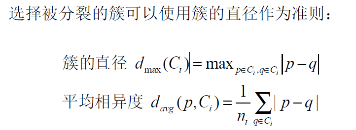
具体算法步骤
当需要嵌套聚类和有意义的层次结构时，层次聚类或许特别有用。在生物科学中这种情况很常见。在某种意义上分层算法是贪婪的，一旦一个观测值被分配给一个类，它就不能在后面的过程中被重新分配。
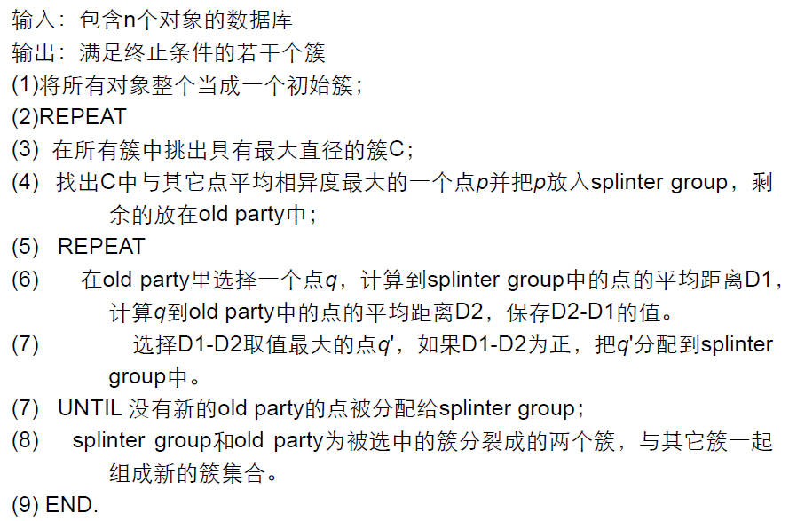
生存分析
生存分析，survival analysis，顾名思义是用来研究个体的存活概率与时间的关系。例如研究病人感染了病毒后，多长时间会死亡；工作的机器多长时间会发生崩溃等。 这里“个体的存活”可以推广抽象成某些关注的事件。 所以SA就成了研究某一事件与它的发生时间的联系的方法。这个方法广泛的用在医学、生物学等学科上，近年来也越来越多人用在互联网数据挖掘中，例如用survival analysis去预测信息在社交网络的传播程度，或者去预测用户流失的概率。 R里面有很成熟的SA工具。
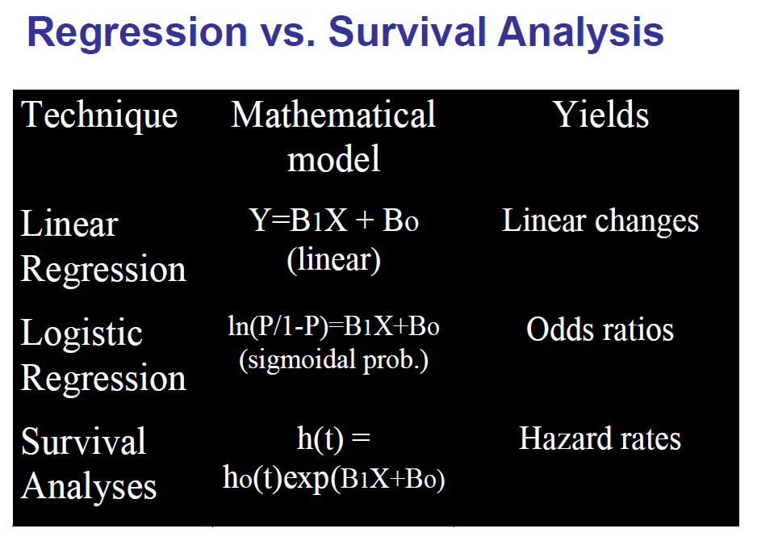
相比于logistics regression， survival analysis有个很大的优点是可以处理缺失数据（censored data， 只有个体的部分数据）。比如说医生想研究病人在服药后的健康状况，跟踪期为2015一整年。有些人接近2015年底才开始服药，那么他就只有很短的数据。如果在一年内知道病人死亡了，那么这个病人的数据是完全的；而健康的病人的数据到2015年末就是缺失的了（right censored），因为假如病人在一年后死亡了，我们并不知道这个事。或者说病人在一年内突然失联了，那么他的数据也是缺失。

生存分析大致分为三类：
- 非参数法 Non-Parametric survival analysis ：不考虑数据的分布类型；有Kaplan-Meier法和寿命表法。
- 参数法 Parametric survival analysis ：要知道数据的分布类型。有指数分布法， Weibull分布法，对数正态回归分布法等。
- 半参数法 Semi-Parametric survival analysis ：具有参数和非参数的特点。如Cox模型法。
生存分析涉及两类输出变量：
- 时间变量
- 截尾变量
用T表示事件的发生时刻
存活函数：S(t)= Pr(T>t) = 1-F(t)
表示个体在t时刻还活着的概率，即事件在t时刻还未发生的概率。S(0)=1, S(无穷大) = 0， 并且S(t)是单调非增函数。实际数据中，t通常取离散值，例如天，周等。
风险函数：

如果每个个体都遵循相同的规律，即个体间没有差异，那么问题比较简单。Kaplan-Meier是一种无参数的模型，它在每个兴趣时间点做一次存活统计，估计存活函数。

这种方法学出来的S(t)是不平滑的。 带参数的模型会假设模型服从某个分布，使学得的函数平滑。常用的有：


241install.packages("OIsurv")23library(OIsurv)45data(tongue)6attach(tongue)7my.surv<-Surv(time[type==1], delta[type==1])8my.fit<-survfit(my.surv~1) #Kaplan-Meier9summary(my.fit)10plot(my.fit)11#比较type=1和type=2这两个组的存活函数12my.fit1<-survfit(Surv(time,delta)~type)13plot(my.fit1)1415#计算风险函数16H.hat<--log(my.fit$surv)17H.hat<-c(H.hat, tail(H.hat,1))1819print(my.fit, print.rmean=TRUE) 2021#检验两个存活函数是否有区别 22survdiff(Surv(time, delta) ~ type) # output omitted2324detach(tongue)Cox proportional hazards model

61# cox PH model2data(burn) 3attach(burn) 4my.surv <- Surv(T1, D1)5coxph.fit <- coxph(my.surv ~ Z1 + as.factor(Z11), method="breslow") 6detach(burn)预测新数据的值感觉比较不正规，因为survival analysis本身不是针对预测的：
risk = function(model, newdata, time) {
as.numeric(1-summary(survfit(model, newdata = newdata, se.fit = F, conf.int = F), times = time)$surv)
}extended Cox model
如果Cox PH Model中的变量会随时间变化，那么就成了extended Cox model，此时HR不再是一个常量。很简单的例子，如果病人的居住地也是一个变量，病人有可能会搬家，例如在北京吸霾了5年，再跑去厦门生活，那么他旧病复发的概率肯定会降低。所以住所这个变量是和时间相关的。一种简单的做法是，按照变量改变的时刻，把时间切割成区间，使得每个区间内的变量没有变化。然后再套用Cox PH模型。
301# extended cox 2data(relapse) 3N <- dim(relapse)[1]4t1 <- rep(0, N+sum(!is.na(relapse$int))) # initialize start time at 05t2 <- rep(-1, length(t1)) # build vector for end times6d <- rep(-1, length(t1)) # whether event was censored7g <- rep(-1, length(t1)) # gender covariate8i <- rep(FALSE, length(t1)) # initialize intervention at FALSE9 10j <- 111for(ii in 1:dim(relapse)[1]){12 if(is.na(relapse$int[ii])){ # no intervention, copy survival record13 t2[j] <- relapse$event[ii]14 d[j] <- relapse$delta[ii]15 g[j] <- relapse$gender[ii]16 j <- j+117 } else { # intervention, split records18 g[j+0:1] <- relapse$gender[ii] # gender is same for each time19 d[j] <- 0 # no relapse observed pre-intervention20 d[j+1] <- relapse$delta[ii] # relapse occur post-intervention?21 i[j+1] <- TRUE # intervention covariate, post-intervention22 t2[j] <- relapse$int[ii]-1 # end of pre-intervention23 t1[j+1] <- relapse$int[ii]-1 # start of post-intervention24 t2[j+1] <- relapse$event[ii] # end of post-intervention25 j <- j+2 # two records added26 }27}2829mySurv <- Surv(t1, t2, d) # pg 3 discusses left-trunc. right-cens. data30myCPH <- coxph(mySurv ~ g + i)以上参考：survival analysis 生存分析与R。
生存分析中涉及的函数：
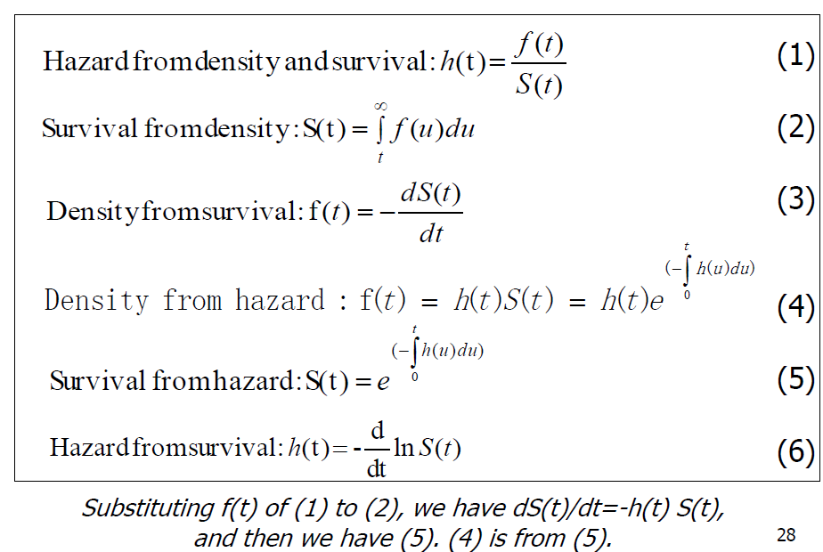
具体实战和应用可以参考：